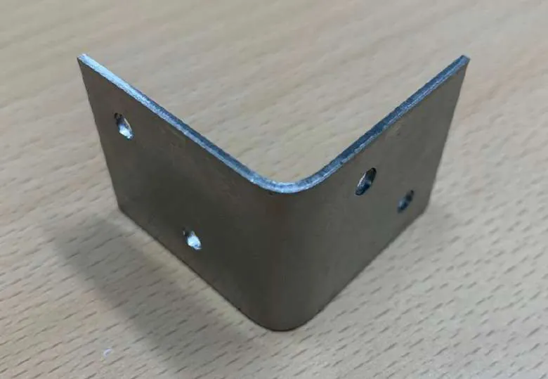
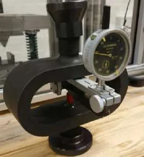
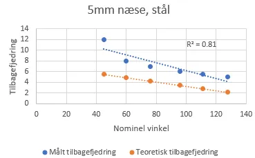
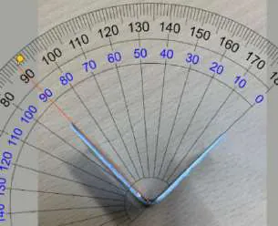
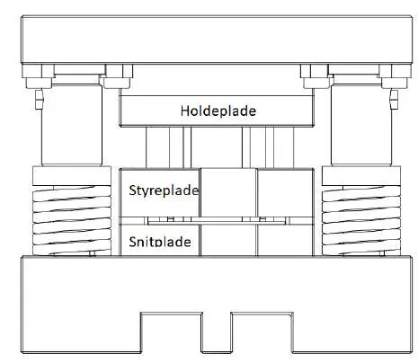
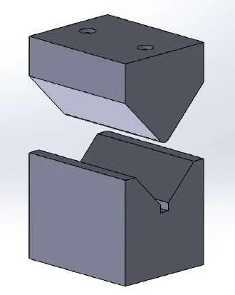

← All workSheet 08 of 08
Course 41787 Production Technology · DTU · team of 4
Angle-Bracket Fabrication and Press Calibration
Making a steel angle bracket the way a workshop would: punch the holes, bend it, and check the press's forces against theory.
- Context
- Course 41787, DTU
- Team
- 4 people
- My role
- Calibration, punching and bending analysis, welding
- Tools
- Servo press, proving ring, SolidWorks
- −6.8 %
- press load-cell error found in calibration
- 0–98 kN
- calibrated range
- 2
- materials punched: stainless steel, brass
What we did
- Made a punching tool and a bending tool for the bracket, designed in SolidWorks.
- Calibrated the servo press's force measurement against a certified proving ring from 0 to about 98 kN. The press's summed load cells read 6.8 % below the true force.
- Calculated the force needed to punch the four holes in stainless steel and brass, and compared it with the measured force-stroke curves.
- Calculated the bending force and the expected spring-back, and measured spring-back across a range of nominal bend angles in both materials.
- Described the welding method for the finished bracket.


My part
My chapters in the team of four
- Press description and force calibration.
- Punching-force calculation and data analysis.
- Bending force and spring-back.
- Welding method and the conclusion.









